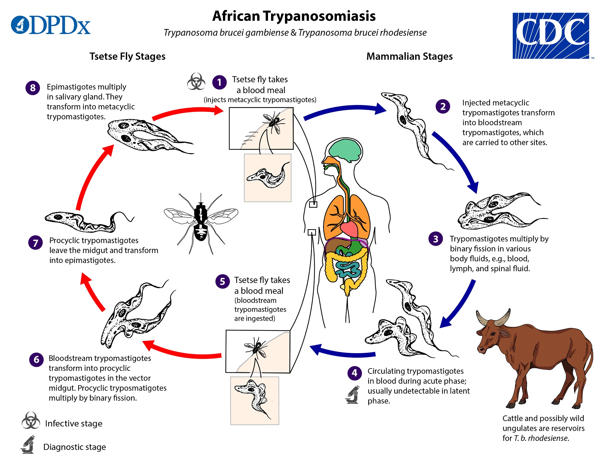

|

|
What causes African Trypanosomiasis?Trypanosoma brucei is a protozoan parasite that is responsible for African trypanosomiasis. This parasite has a complex lifecycle that includes the mammalian host and the tsetse fly vector (Maxfield and Bermudez, 2023). The parasite T. brucei is divided into two subspecies: T. b. gambiense and T. b. rhodesiense. These subspecies cause different types of disease that vary in epidemiological patterns and clinical manifestations (Hopkins Medicine, 2024). T. brucei primarily infects humans, as well as a variety of domestic and wild animals, including cattle, pigs, and other mammals (CDC, 2024). Within mammals, T. brucei can live within host cells, particularly in the bloodstream and the central nervous system, causing systemic and neurological symptoms (CDC, 2024). The type of transmission of this disease is indirect-vector-borne since humans get infected through the bite of infected tsetse flies (WHO, 2024). These flies can be commonly found in rural areas, and they bite during the day, which also increases the possibility of the risk of transmission to individuals living or working in the regions affected by this disease (CDC, 2023). Consequently, African trypanosomiasis is not directly contagious between humans. |